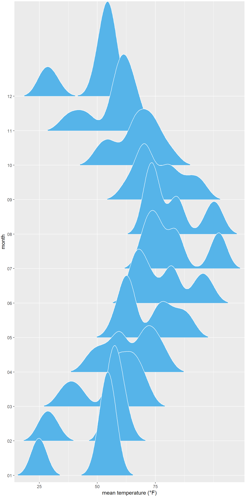

DANL 310: Data Visualization and Presentation Homework Assignment 1
Question 1
Renovate your personal website on GitHub using Quarto.
✔️
Question 2
Provide ggplot codes to replicate the given figure.
ncdc_temp <-read_csv('https://bcdanl.github.io/data/ncdc_temp_cleaned.csv')library(lubridate)ggplot(ncdc_temp, aes(x = date, y = temperature, color = location)) +geom_line(size =1) +# Adds a layer to the ggplot object with a line plot of the temperature data, with a size of 1.scale_x_date(name ="month", limits =c(ymd("0000-01-01"), ymd("0001-01-04")), # Adds a scale to the x-axis with the label "month" and limits of Jan 1, 0000 to Jan 4, 0001, and breaks at the beginning of each quarter (Jan, Apr, Jul, Oct), with corresponding labels.breaks =c(ymd("0000-01-01"), ymd("0000-04-01"), ymd("0000-07-01"),ymd("0000-10-01"), ymd("0001-01-01")),labels =c("Jan", "Apr", "Jul", "Oct", "Jan"), expand =c(1/366, 0)) +scale_y_continuous(limits =c(19.9, 107), # Adds a scale to the y-axis with limits of 19.9 to 107, breaks at every 20 units, and label "temperature (°F)".breaks =seq(20, 100, by =20),name ="temperature (°F)") +theme(legend.title.align =0.5) # Adjusts the alignment of the legend title to be centered.
Question 2b
ncdc_temp <-read_csv('https://bcdanl.github.io/data/ncdc_temp_cleaned.csv')library('ggplot2')p <-ggplot(ncdc_temp, aes(x = month, y = temperature)) # add a box plot with grey fillp +geom_boxplot(fill ='grey90') +# add labels for x and y axeslabs(x ="month",y ="mean temperature (°F)")
p <-ggplot(ncdc_temp, aes(x = temperature, y = month)) p + ggridges::geom_density_ridges( # Adds a layer to the ggplot object with a smoothed density plot of the temperature data using the 'ridgeline' plot type.scale =3, rel_min_height =0.01, # Sets the scaling and minimum relative height for the plot.bandwidth =3.4, fill ="#56B4E9", color ="white"# Sets the bandwidth for the plot, as well as the fill and color for the plot elements.) +scale_x_continuous( # Adds a scale to the x-axis for continuous values.name ="mean temperature (°F)", # Sets the label for the x-axis.expand =c(0, 0), breaks =c(0, 25, 50, 75) # Sets the expansion and the break points for the x-axis.) +scale_y_discrete(name ="month", expand =c(0, .2, 0, 2.6)) +# Adds a scale to the y-axis for discrete (categorical) values, with a label and a custom expansion.theme( # Applies a custom theme to the ggplot object.plot.margin =margin(3, 7, 3, 1.5) # Sets the margin of the plot.)

Question 2d
m <-ggplot(data = mtcars, aes(x = disp, y = mpg, color = hp)) m +geom_point(aes(color = hp)) +# add scatter plot with color mapped to "hp" variablelabs(x ="displacement(cu. in.)", y ="fuel efficiency(mpg)")+# add labels to x and y axesscale_color_gradient()+# add color gradient scale legendscale_fill_brewer(palette ="Emrld") # add fill color palette with "Emrld" scheme to the legend
Question 2e
popgrowth_df <-read_csv('https://bcdanl.github.io/data/popgrowth.csv')p <-ggplot(popgrowth_df, aes(x =reorder(state, popgrowth), y =100*popgrowth, fill = region))p +geom_col() +# Add the geom for the columnsscale_y_continuous(limits =c(-.6, 37.5), expand =c(0, 0), # Set y axis limits and expansionlabels = scales::percent_format(accuracy =1, scale =1), # Set percent labels for y axisname ="population growth, 2000 to 2010"# Set name for y axis ) +coord_flip() +# Flip the x and y axistheme(legend.position =c(.67, .4), # Set legend positionaxis.text.y =element_text( size =6, margin =margin(t =0, r =0, b =0, l =0) )) # Adjust the size and margin for y axis text
Question 2f
male_Aus <-read_csv('https://bcdanl.github.io/data/aus_athletics_male.csv')# Define color and fill vectors for use in plotcolors <-c("#BD3828", rep("#808080", 4))fills <-c("#BD3828D0", rep("#80808080", 4))p <-ggplot(male_Aus, aes(x=height, y=pcBfat, shape=sport, color = sport, fill = sport))# Add geom_point layer with custom sizep +geom_point(size =3) +# Set shape values for different sportsscale_shape_manual(values =21:25) +# Set color values for different sportsscale_color_manual(values = colors) +# Set fill values for different sportsscale_fill_manual(values = fills) +# Set x and y axis labelslabs(x ="height (cm)",y ="% body fat" )
Question 2g
titanic <-read_csv('https://bcdanl.github.io/data/titanic_cleaned.csv')p <-ggplot(titanic, aes(x = age, y =after_stat(count) ) ) # Add a density line plot for all passengers with transparent color, and fill legend with "all passengers"p +geom_density(data =select(titanic, -sex), aes(fill ="all passengers"),color ="transparent" ) +# Add another density line plot for each sex with transparent color, and fill legend with sexgeom_density(aes(fill = sex), bw =2, color ="transparent") +# Set the x-axis limits, name, and expand argumentsscale_x_continuous(limits =c(0, 75), name ="passenger age (years)", expand =c(0, 0)) +# Set the y-axis limits, name, and expand argumentsscale_y_continuous(limits =c(0, 26), name ="count", expand =c(0, 0)) +# Set the manual color and fill values, breaks, and labels for the legendscale_fill_manual(values =c("#b3b3b3a0", "#0072B2", "#D55E00"), breaks =c("all passengers", "male", "female"),labels =c("all passengers ", "males ", "females"),name =NULL,guide =guide_legend(direction ="horizontal") ) +# Set the Cartesian coordinate system to allow for data points to fall outside the plot limitscoord_cartesian(clip ="off") +# Create separate density line plots for male and female passengersfacet_wrap(~sex) +# Set the x-axis line to blank, increase the strip text size, and set the legend position and margintheme(axis.line.x =element_blank(),strip.text =element_text(size =14, margin =margin(0, 0, 0.2, 0, "cm")),legend.position ="bottom",legend.justification ="right",legend.margin =margin(4.5, 0, 1.5, 0, "pt"),legend.spacing.x = grid::unit(4.5, "pt"),legend.spacing.y = grid::unit(0, "pt"),legend.box.spacing = grid::unit(0, "cm") )
Question 2h
cows_filtered <-read_csv('https://bcdanl.github.io/data/cows_filtered.csv')p <-ggplot(cows_filtered, aes(x = butterfat, color = breed, fill = breed))# add a density line for each breed with some transparencyp +geom_density(alpha = .2) +# set x-axis propertiesscale_x_continuous(expand =c(0, 0), # remove padding from axis limitslabels = scales::percent_format(accuracy =1, scale =1), # format axis labels as percentages with 1 decimal pointname ="butterfat contents"# set axis label) +# set y-axis propertiesscale_y_continuous(limits =c(0, 1.99), expand =c(0, 0)) +# set plot area propertiescoord_cartesian(clip ="off") +# allow density lines to extend beyond axis limitstheme(axis.line.x =element_blank()) # remove x-axis line